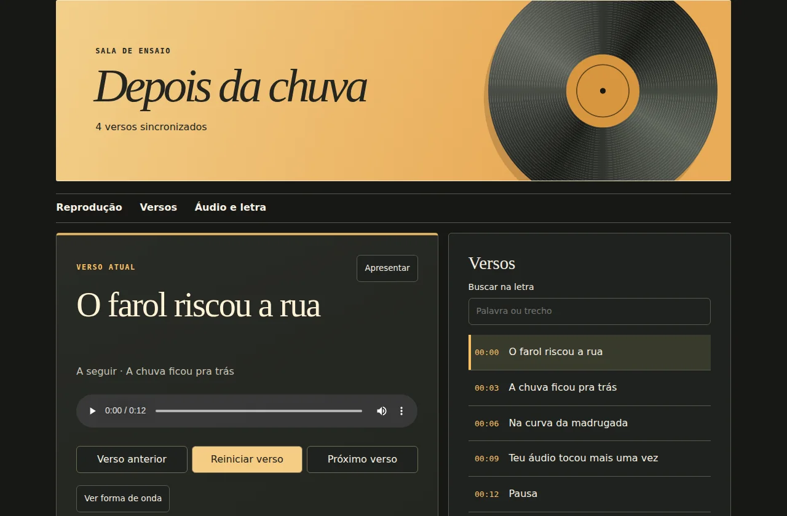
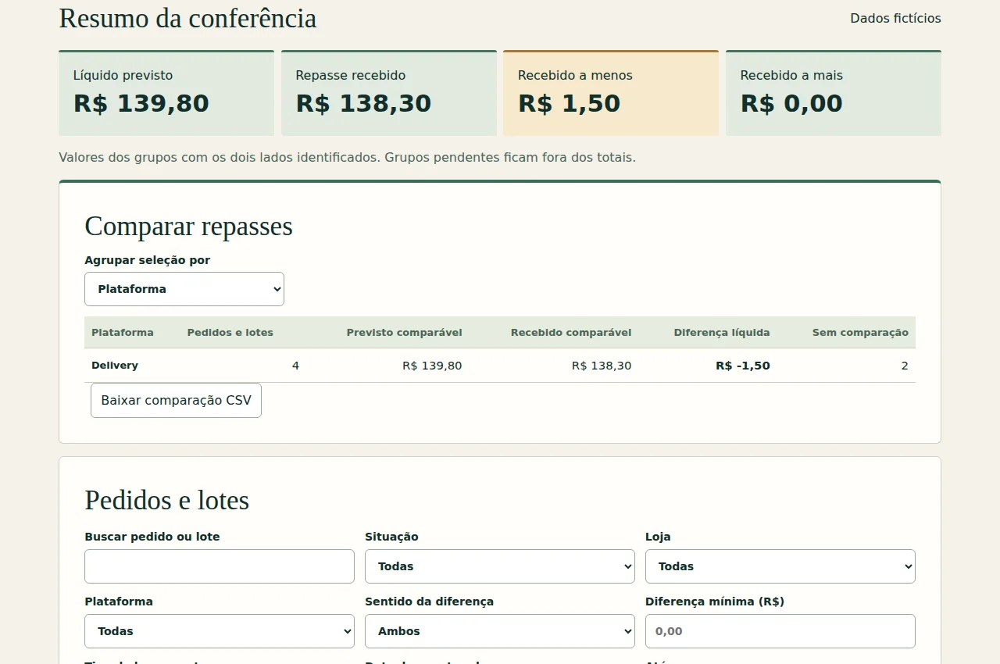
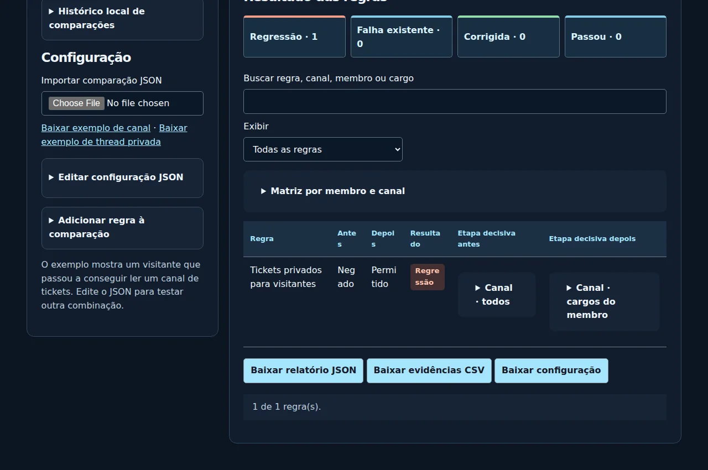
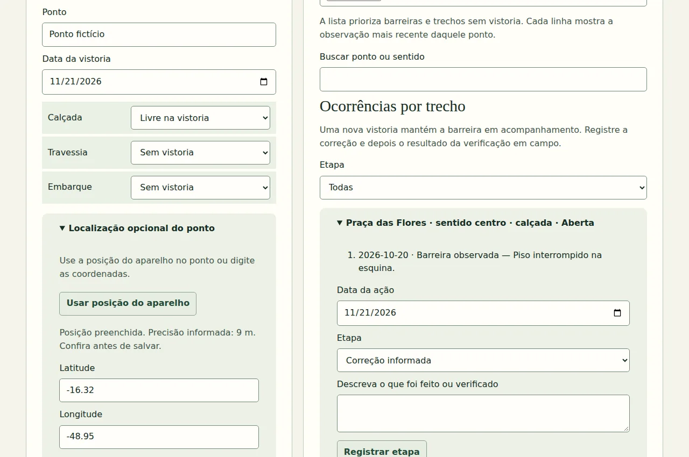

Música
Contratempo
Repita um verso no seu ritmo. Ajuste a letra enquanto ouve a gravação e exporte as marcações.
O que testar
Na faixa de exemplo, marque de 0:03 a 0:06 e escolha um aumento de velocidade a cada duas voltas.
Portfólio · ykauttiz
Sou o Kauê, desenvolvedor brasileiro em formação. Uso Python e JavaScript para criar ferramentas que você pode experimentar direto no navegador.
Explorar projetos
Música
Repita um verso no seu ritmo. Ajuste a letra enquanto ouve a gravação e exporte as marcações.
Na faixa de exemplo, marque de 0:03 a 0:06 e escolha um aumento de velocidade a cada duas voltas.

Delivery
Confira taxas, estornos e repasses de delivery. Rastreie cada diferença até a linha do extrato.
Abra o exemplo fictício e confira por que o pedido 0019 ficou R$ 1,50 abaixo do previsto.

Comunidades
Simule quem pode ler e responder em canais e threads do Discord antes de mexer nas permissões.
Compare o canal de tickets e expanda a etapa que mudou a permissão de leitura.

Acessibilidade urbana
Registre barreiras na calçada, na travessia e no embarque. Acompanhe a correção até a próxima vistoria.
Abra o exemplo fictício, registre a correção da calçada e confira a mudança de etapa.